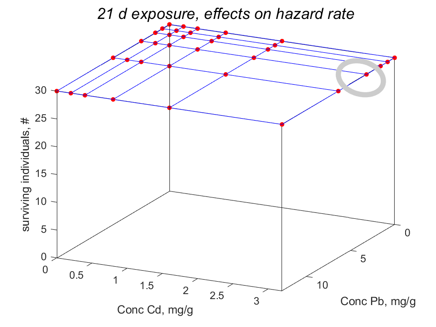

Tri-variate data
Tri-variate data is a 3-dim array of dependent variables, which Matlab labels as "row", "column" and "page". The present implementation of tri-variate data implicitly assumes that the third indenpendent varable (so the "page" direction) has interpretation "time". The labels along the axes is a cell string of length 4: independent variable 1 and 2, dependent variable, independent variable 3 (= time). The units should be specified accordingly.
An extra complicating factor is that particular data-points might be missing.
For this reason the code accepts such missing data if specified as NaN (Not a Number).
Other auxiliary data might be associated to any data, so also to trii-variate data.
The predict-file should specify the prediction for all dependent variables in the form of a 3-dim array.
Tri-variate data does not have a separate coding system, since the underscore-extension of uni-variate data gives suffient possibilities to specify codes.
Specifying tri-variate data
 Tri-variate data is specified page-by-page as done in mydata_OECD232_Cd__Pb for the analysis of the toxicity of mixtures of cadmium and lead salts. The three independent variables are specified in the second element of auxiliary data of the typetreat,
while the first element specifies the way in which the results are presented, as for bi-variate data.
The second element of treat is a cell-string of three vectors of values, which length should correspond with the number of rows, columns and pages.
The present implementaton only accepts the scalar 2 are first element of treat, so allows interpolation in independent variable 1 and 2,
while independent variable 3 is interpolated by default.
Irrespective of the specified number of time-points, 100 plots are created (called "frame000.png", ., "frame100.png") in subdirectory of the working directory. The data-points in each frame is obtained by linear interpolation of the user-defined data points. A clock, which is integrated in each frame monitors the time, relative to the total time. The all these frames are linked in a movie, showing 10 frames per second, by the open-source animated png-assembler apngasm-2.91-bin-win64.zip. Extract the file apngasm64.exe and make a path to it in your operating system (so not in Matlab since the code is run from the powershell, not in Matlab itself).
Like for all plots, you can specify a title and/or a subtitle. Titles are part of the plot, but subtitles only appear in the modal-presentation in html on the AmP website. The latter might be more attractive if you want to use the plot for publication.